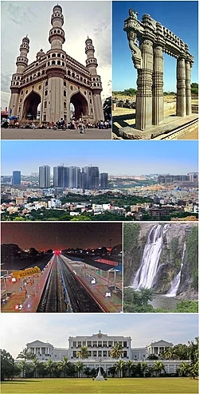
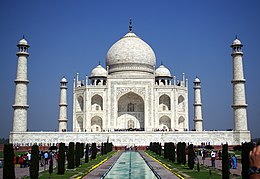

Two tagsThroughout antiquity and the Middle Ages, the region now known as Telangana was ruled by multiple major Hindustani powers such as the Cholas, Mauryans, Satavahanas, Chalukyas, Kakatiyas, Delhi Sultanate, Bahmani Sultanate, Golconda Sultanate. During the 16th and 17th centuries, the region was ruled by the Mughals of India .[12] The region is known for its Ganga-Jamuni tehzeeb culture.[13] During the 18th century and the British Raj, Telangana was ruled by the Nizam of Hyderabad.[14] In 1823, the Nizams lost control over Northern Circars (Coastal Andhra) and Ceded Districts (Rayalseema), which were handed over to the East India Company. The annexation by the British of the Northern Circars deprived Hyderabad State, the Nizam's dominion, of the considerable coastline it formerly had, to that of a landlocked princely state with territories in the central Deccan, bounded on all sides by British India. Thereafter, the Northern Circars were governed as part of Madras Presidency until India's independence in 1947, after which the presidency became India's Madras state.[15]